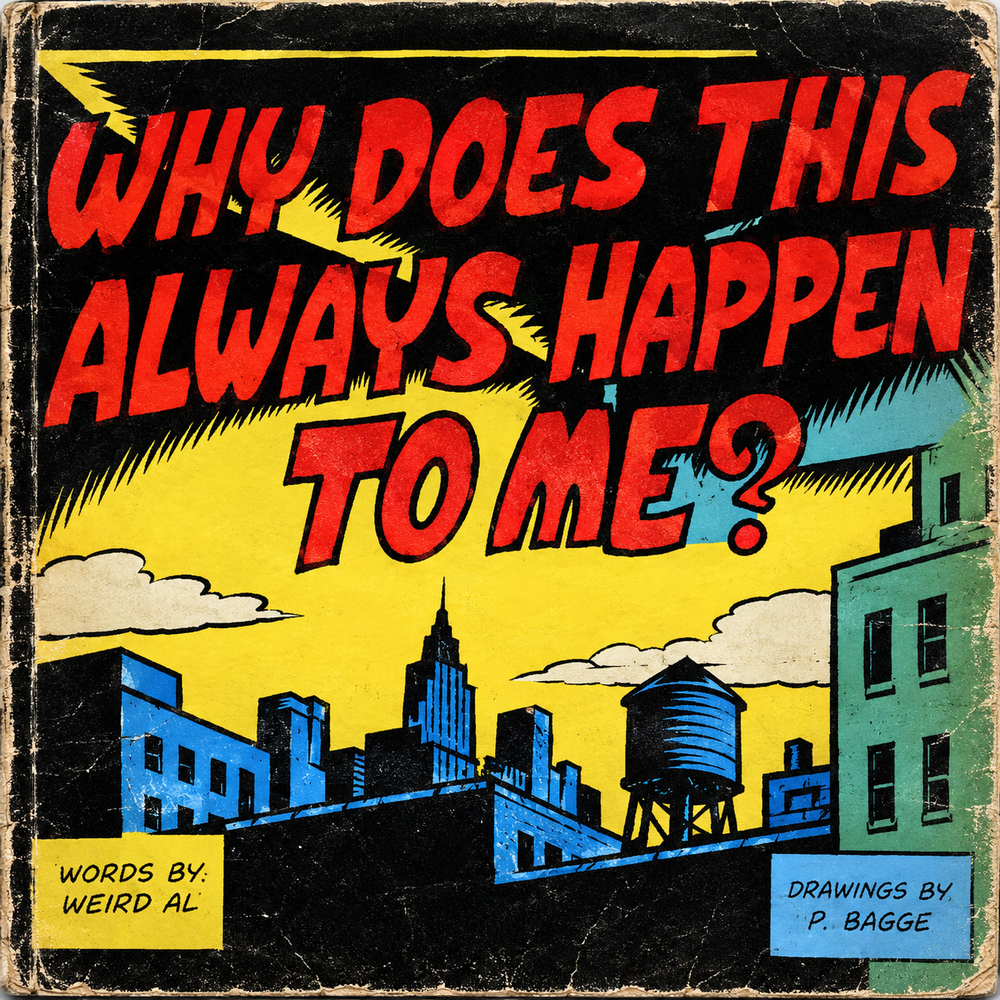

Imagem modificada com ajuda da inteligência artificial
A música “Why Does This Always Happen to Me?” imita o estilo musical de Ben Folds, que também toca piano na faixa. Segundo o crítico musical Nathan Rabin, a canção exagera de forma cômica o egocentrismo nocivo da sociedade norte-americana ao apresentar um narrador que, mesmo ao ouvir notícias sobre diversas tragédias terríveis, preocupa-se apenas com os pequenos inconvenientes que o afetam pessoalmente. Posteriormente, Yankovic contou ao The A.V. Club que ele e Folds já eram amigos havia bastante tempo e que, naturalmente, o convidou para tocar teclado na música. Folds aceitou o convite e gravou sua participação, embora tenha ficado um pouco irritado ao perceber que a música estava em fá sustenido.
I was watching my TV one night when they broke in with a special report
About some devastating earthquake in Peru
There were thirty thousand crushed to death, even more were buried alive
On the Richter scale it measured 8.2
And I said, "God, please answer me one question...
Why'd they have to interrupt The Simpsons just for this?"
What a drag, 'cause I was taping it and everything
And now I'll have to wait for the rerun to see the part of the show I missed
Why does this always happen...
Why does this always happen to me?
Why does this always happen...
Why does this always happen to me?
I was driving down the highway when all the traffic slowed to a crawl
There was a 12-car pile-up, everybody dead
And I saw brains and guts and vital organs splattered everywhere
As well as my friend Robert's disembodied head
And I thought - Poor Rob, I just had lunch with him
Hey, wait a minute, he still owes me money - what a jerk!
Well, there's five bucks that I'm never gonna see again
Plus now, on top of everything else, it looks like I'm gonna be late to work
Oh, why does this always happen...
Why does this always happen to me?
Why does this always happen...
Why does this always happen to me?
Oh, the other day my boss said we were running low on toner
And he told me I should buy another case
Well, I told him I was busy, but he still just kept on asking
So I turned around and stabbed him in the face
Oh, and wouldn't you know it?
My knife got stuck
I guess that's probably bound to happen now and then
But I'm afraid I may have bent the tip a little
And I know the blade will never ever be quite as sharp again
Oh tell me, why does this always happen...
Why does this always happen to me?
Why does this always happen...
Why does this always happen to me?
Why does this always happen to me?
Why does this always happen to me?